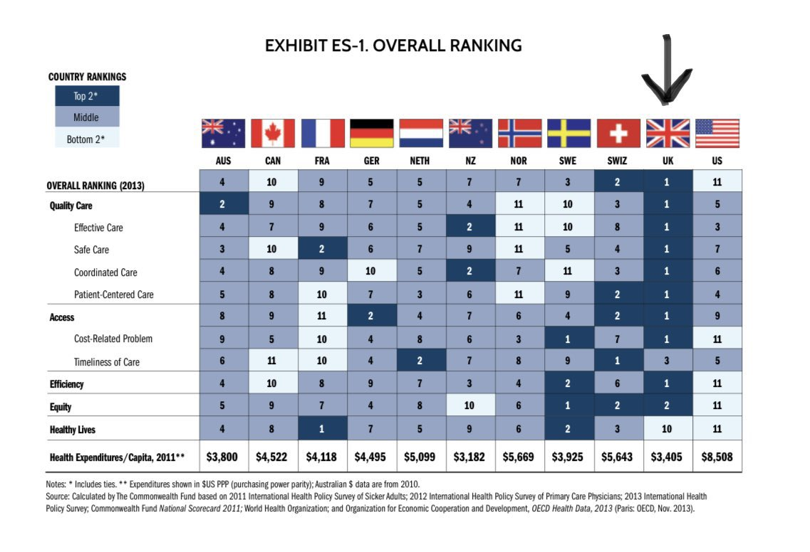

US healthcare results in inequality and bankruptcy, but when limited to everyday people it doesn’t often make the news. The death of a wealthy CEO might finally get the attention of those in power.
On the 4th of December news emerged of the assassination of healthcare CEO Brian Thompson in the United States. While details are still unfolding (the current leading suspect Luigi Mangione claims to be innocent), the incident raises broader issues about the role of profit-driven healthcare systems and the dangers they pose.
Disparities in Attention
The first striking observation is the disproportionate media attention given to this case. Murders occur daily in America, often involving firearms, yet the killing of a wealthy individual garners significantly more coverage than the countless lives lost among ordinary citizens. This disparity reflects a broader societal tendency to prioritise the wealthy and influential, but it also serves as a stark reminder of the systemic inequalities at play.
I want to make it clear that I celebrate no deaths, including this one. I hate the way the US healthcare system is, and I think it’s immoral for people to become as rich as this man was on the back of it, but I will not condone those celebrating this as some sort of ‘payback’.
What is true is that the murder of someone very wealthy has reminded everyone of the obvious truth behind the industry that made him wealthy, and indeed the whole concept of private healthcare: the incentive to profit by spending as little money as possible on treatment while charging as much as you can get away with.
The Suspect and His Motives
What makes this case unusual is the profile of the suspect. By all accounts, he is wealthy, well-educated, and had no prior criminal record or history of violence. He attended the University of Pennsylvania, an Ivy League university, earning both a degree and a master’s in computer science—hardly the typical background of someone who would commit such an act.
Friends of Mangione suggest he suffered a debilitating back injury from a surfing accident and endured chronic pain despite undergoing multiple treatments. Despite his wealth and insurance coverage, he allegedly faced repeated denials of certain treatments by his insurer, who deemed them unnecessary. These frustrations may have led him to target the CEO of the insurance company, an individual who had profited significantly from a system that, to the suspect, denied him care.
It’s critical to state unequivocally that I believe that violence is never a solution to a non-violent problem. However, understanding the conditions that drive someone to such desperation is essential. The suspect appears to have meticulously planned the attack, isolating himself for months before targeting the CEO—a calculated act rooted in personal grievance rather than random violence.
The Inevitable Outcome of Profit-Driven Healthcare
This case highlights the perils of introducing profit motives into healthcare. In systems where financial gain becomes a priority, insurers and providers often save money by denying treatments, regardless of the impact on patients. For every pound saved, an additional pound is pocketed by executives and shareholders. This dynamic breeds resentment, particularly when patients feel abandoned by a system that prioritises profit over care.
And yet, we are told by this Labour government, and many UK governments before it, that involving private healthcare in the NHS is somehow necessary because the NHS is ‘broken’ or ‘not fit for purpose’. This is a lie and must be called out.
The UK’s NHS, while far from perfect, historically stood as a model of efficiency and equity. Until 2011, it was widely recognised as one of the most efficient healthcare systems in the world, delivering strong outcomes for relatively low expenditure.

However, the introduction of private sector involvement under successive Conservative and Liberal Democrat governments has fundamentally altered its landscape. Waiting lists have soared, A&E targets are missed, and patients struggle to see GPs—all symptoms of a system weakened by reforms that prioritise cost-cutting over care.
The Danger of Following America’s Lead
Disturbingly, Labour’s current health proposals seem poised to deepen this trend. Figures such as Health secretary Wes Streeting advocate for increased private sector involvement in the NHS, bringing in consultants and advisors to implement “efficiency” measures. But let’s be clear: the private sector’s primary goal is not to improve healthcare—it is to make money. Every pound saved by denying care or cutting corners flows into the pockets of CEOs and shareholders.
This profit-driven model inevitably creates winners and losers. The winners are the corporations and the ultra-wealthy, who profit from extracting money from healthcare systems. The losers are patients denied timely, effective care. The U.S. offers a grim warning: a system where wealth dictates access to healthcare creates desperation, and desperation breeds violence.
A Crossroads for the NHS
The UK now faces a choice. Do we continue down the road of increasing private sector involvement, accepting that this will likely exacerbate inequality and reduce access to care? Or do we return to a model that prioritises public investment in the NHS, ensuring healthcare remains a right, not a privilege?
Desperate people will resort to desperate measures. While the violence seen in the U.S. is extreme, it serves as a cautionary tale. By allowing profit motives to dictate healthcare policy, we risk creating a society where people are pushed to their limits—financially, emotionally, and physically. The solution is not more private sector involvement but less.
We must resist efforts to privatise further and instead invest in a truly public NHS. This is not just about preserving healthcare; it’s about preventing a future where desperation turns into tragedy.
There happens to be a petition by We Own It running right now asking Wes Streeting not to make new PFI deals. This is just a part of his agenda to siphon more NHS money, our money, off to the private health sector. I urge you to sign it and share it.